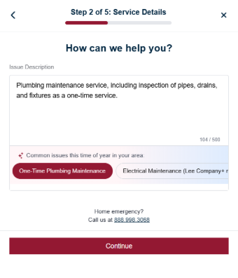

Home services
Show availability before asking for anything
A home services company's online booking asked for a name, email, phone number and address before showing whether anyone could come out. I redesigned it so homeowners see real appointment times by the third screen. Paid jobs through the new flow ran at 4.7 times the old channel's typical year.
- My role: Product designer, sole designer
- Team: Rev3 Labs
- Status: Live
The problem
Nobody books an HVAC or plumbing visit for fun. Something's broken, and the first question is "can you come, and when?"
The company's online booking ran through a third-party widget that made customers earn that answer. It took several screens of personal details before showing a single open slot. People have learned that handing over an email and phone number means a steady stream of marketing, so many left before they ever saw availability. Bookings through the channel had been flat for two years.
What I looked at
I audited the old tool step by step: what it asked for, in what order, and what the customer got back at each point. Two findings shaped everything after.
- Customers wanted an answer, not a form. Only two things decide whether a visit can happen: where you are and what's wrong. Everything else could wait.
- Contact details up front felt like a trap. Asking for them first said "we want to sell to you" before "we can help you."
Three decisions that shaped it
Ask for an address, not an identity
The tension. Marketing wanted name, email and phone on the first step, so anyone who dropped off could still be followed up with. That's a fair business goal.
What we did. Rather than argue it, we tested it. Version B asked for name, email, phone and address up front. Version A, my recommendation, asked only for the address so we could confirm the company serves the area. Version A converted two to three times better.
The trade-off. We gave up contact details from people who leave partway through. To win some of that back honestly, anyone outside the service area can opt in to hear when service expands to them. Nobody spends five steps finding out we can't come.
Let people describe the problem in their own words
Customers don't know the company's service categories, and they shouldn't have to. They type what's wrong, or tap a quick pick drawn from the most common requests that month. An AI model maps what they wrote to the right service line, so the times they see come from technicians who can actually do that job in their area.
Designing for when the AI misses. The model won't always find a match, and that should never block a booking. If it can't place the request, the screen first helps the customer rephrase. If that still doesn't work, they can pick a category themselves and keep going. The AI makes the flow faster, but nothing depends on it being right.
Real times on the third screen
With a location and a problem, the system can show actual arrival windows, plus an ASAP option for urgent jobs. By step three the customer knows whether anyone can come when they need it, before they go check a competitor. Name, email and phone come after they've picked a time.
- Home or business. One question. This flow is for homes, so a business gets sent to the commercial team.
- Where are you? Just the address, to confirm the company serves the area.
- What's wrong? Free text or a quick pick, sorted into the right service line behind the scenes.
- Pick a time. First available arrival windows, a calendar to browse, or ASAP. The chosen window is played back before you continue.
- Tell us who you are, then you're booked. Contact details last, then a summary with a reference number, email and reminders. Every booking lands in Dynamics 365 Field Service as a work order, so dispatch has nothing extra to do.




Measuring it
We watched the flow in PostHog after launch. The clearest lesson was about dead ends. When the AI couldn't place a request, the worst possible answer was "we don't offer that," because it turns a possible job into a lost one. We tuned the categorization and changed those moments to say "we're not sure what you need, here's how to reach us," with a phone number and email. Every request now has a path to a person.
For the business case, I compared paid work orders from January through July 2026 with the same months of 2024 and 2025, the last two years on the old tool. I averaged both years because one felt like too small a sample, held the service categories constant, and counted only paid orders.
What happened
- 4.7x paid jobs compared with the old channel's typical year, after two flat years.
- 4x paid revenue through the channel.
- About 10x maintenance bookings, led by cooling maintenance at 13.6x. Customers will book planned work themselves, not just emergencies.
- 3.9x to 4.2x growth in every core service call line: HVAC, plumbing and electrical.
Revenue across those same categories stayed roughly flat company-wide, so the growth came from the new channel, not a rising tide.
Average revenue per job came in about 14% under the two-year baseline, but within 2% of 2024; 2025 was the unusually high year. The likely reason is mix: customers now book routine service and maintenance themselves, while big installs still go through a sales rep.
For a consulting client, that answers the question every client eventually asks. The project has paid for itself, and the channel is still growing.
How I worked
Three of us at Rev3 built it. On the client side I worked with business analysts, marketing and executives to understand what each of them needed from online booking, then pitched the design and the implementation path to all of them together. When marketing pushed back on asking for contact details later, we settled it with the A/B test instead of a debate.
What's next
- Weather-aware quick picks. The suggestions already come from what customers usually need that month. Local weather would sharpen them: heating problems ahead of a cold snap, electrical and AC work after summer storms and outages.
- A customer portal. Today booking is a one-time visit. A place to log in, see past visits and requests, and pay would turn it into an ongoing relationship.
Built on Dynamics 365 Field Service with Angular, Python, Azure and Azure AI Foundry.